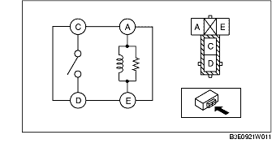
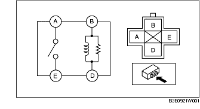

INSPECTION DE RELAIS
B3E092167730W02
Type de relais
Type de borne
Nom de pièce
4 bornes
Type A
• Relais de feux antibrouillard avant
• Relais de feux de position
• Relais de climatisation
• Relais de dégivreur de vitre arrière
• Relais de pompe à carburant
• Relais d'avertisseur sonore
Type B
• Relais principal
• Relais de démarreur
• Relais de soufflerie
• Relais de lave-phare
Type A
1. Contrôler la continuité entre les bornes de relais.

• Si les valeurs mesurées ne correspondent pas aux spécifications du tableau, remplacer le relais.
Type B
1. Contrôler la continuité entre les bornes de relais.

• Si les valeurs mesurées ne correspondent pas aux spécifications du tableau, remplacer le relais.